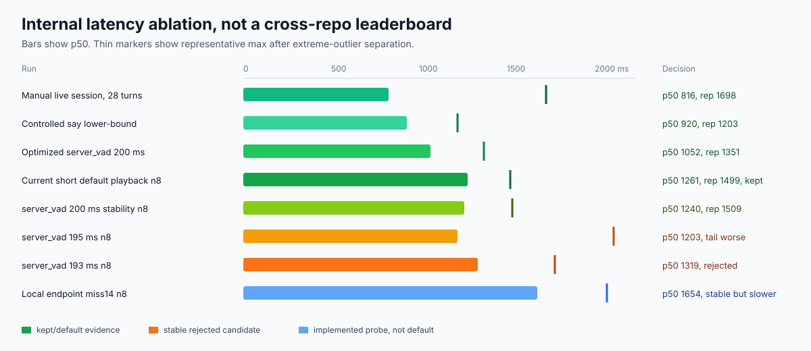
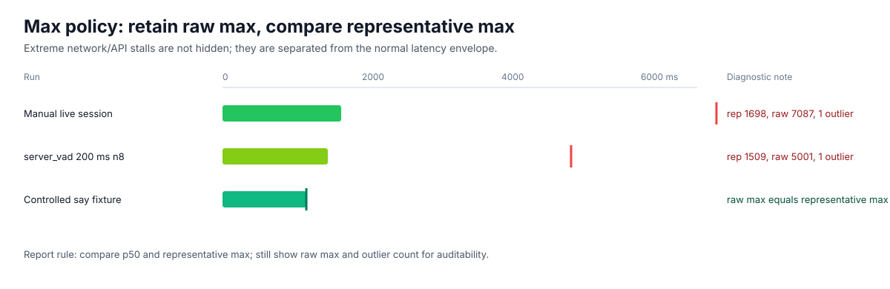
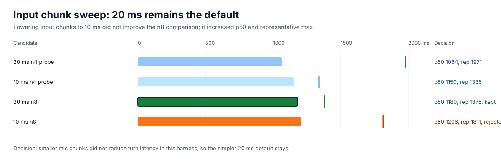
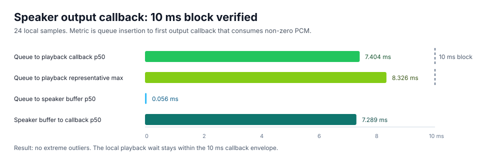
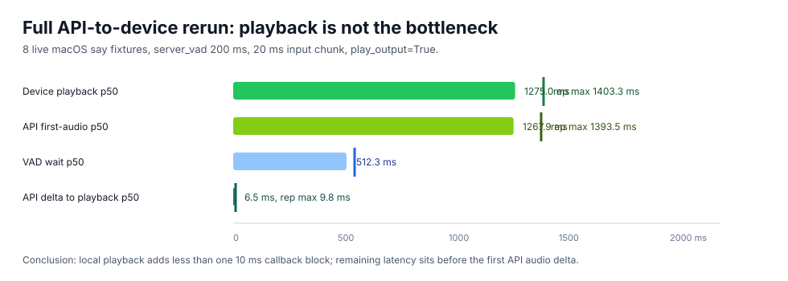
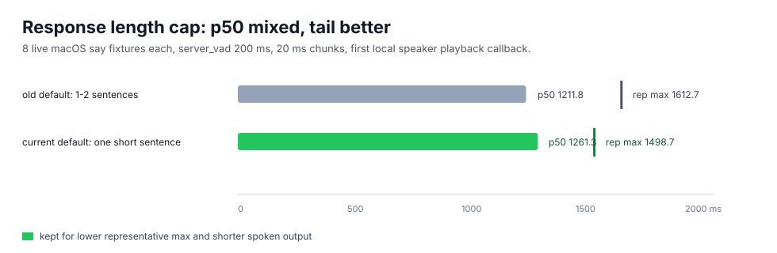
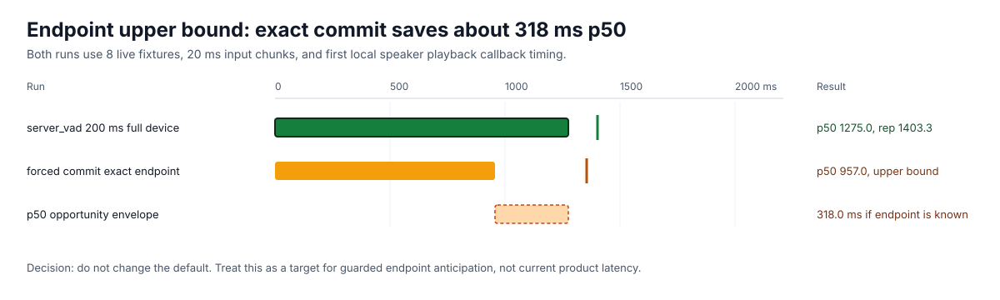
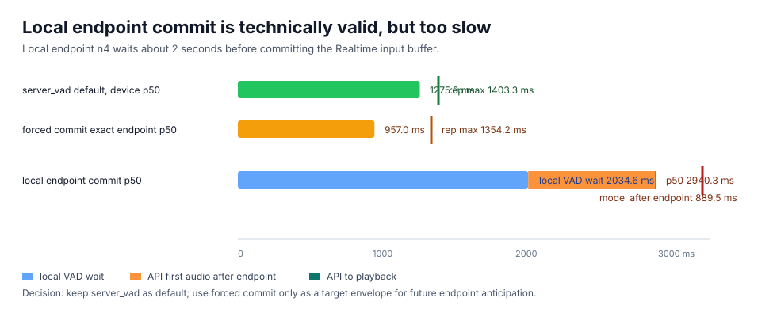
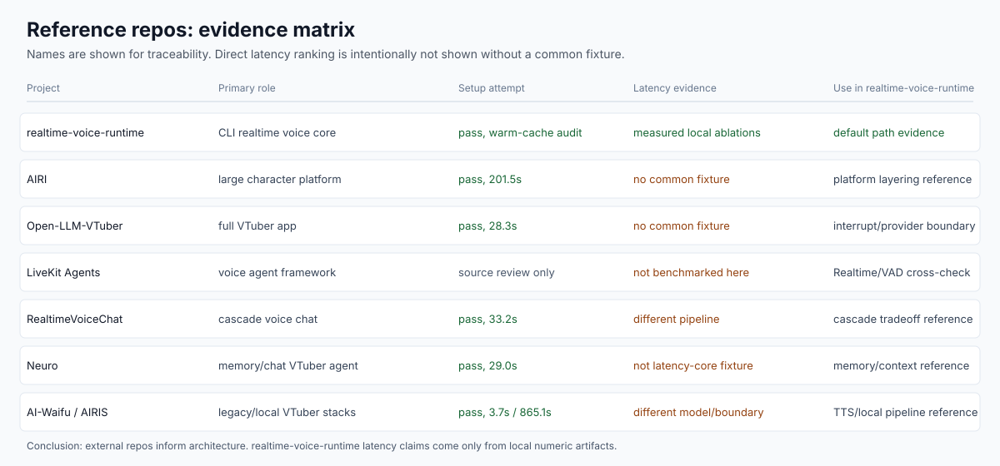
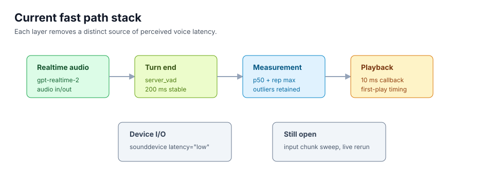

zemory-sama 최종 성능 비교 보고서
실시간 음성 에이전트의 응답 최적화 결과를 로컬 ablation, 최신 연구, 공식 문서, 주요 레퍼런스 repo 소스 관점에서 비교했다. 이 문서는 외부 repo 속도 순위표가 아니다. 공통 fixture가 없는 외부 repo에는 latency 숫자를 만들지 않고, 측정 가능한 항목과 아키텍처 판단을 분리했다.
1. 결론
현재 기본 경로는 Realtime audio-native + short response다. zemory-sama의 fastest stable path는 gpt-realtime-2 audio-in/audio-out, reasoning.effort=low, server_vad threshold 0.5, silence 200 ms, 20 ms input chunk, one short sentence response cap, 10 ms speaker callback, sounddevice low-latency I/O다.
외부 repo 대비 “우리가 더 빠르다”는 직접 결론은 내리지 않는다. 같은 모델을 쓰면 모델 내부 추론 속도는 거의 같은 하한을 갖고, 외부 repo마다 입력 fixture, endpoint 기준, TTS 경로, 출력 callback 기준이 다르다. 따라서 속도 비교의 의미는 cross-repo 순위가 아니라 zemory-sama 내부에서 모델 바깥 지연을 얼마나 줄였는지 검증하는 데 있다.
실제 최적화 대상은 모델 자체가 아니라 turn-end detection, audio-native streaming, 응답 길이, local playback buffering, barge-in/interrupt chain, async context deadline이다. 이 보고서는 그 후보들을 같은 harness로 채택/기각한 기록이다.
200 ms보다 짧은 VAD silence window는 부분적으로 빠른 값이 나오지만 early cutoff가 발생했다. 193 ms와 195 ms는 n8 sweep에서 안정적이었으나 representative tail이 200 ms보다 나빠 기본값으로 채택하지 않았다.
full API-to-device rerun도 완료됐다. 현재 short-response 기본값은 n8에서 source-audio end부터 첫 로컬 speaker playback callback까지 p50 1261.3 ms, representative max 1498.7 ms, outlier 0이었다. 같은 코드/시간대 old response length는 p50 1211.8 ms로 더 낮았지만 representative max가 1612.7 ms로 더 높았다. 따라서 short response는 p50 단독 승리가 아니라 tail과 실제 발화 길이를 줄이는 기본값으로 채택한다.
API first audio delta에서 speaker callback까지의 추가 비용은 현재 short default n8 기준 p50 5.3 ms, representative max 9.4 ms다. 남은 큰 병목은 로컬 playback이 아니라 turn stop + model first-audio 구간이다.
turn_detection=none과 exact endpoint forced commit으로 상한선을 재면 p50 957.0 ms, representative max 1354.2 ms였다. 이는 server_vad full-device p50보다 318.0 ms 빠르지만 실제 앱이 사용자 발화 종료를 정확히 알아야 하므로 기본값이 아니라 endpoint anticipation/local endpoint research 후보로 둔다.
로컬 Silero endpoint로 Realtime buffer를 수동 commit하는 실제 경로도 구현하고 튜닝했다. 기존 two-stage local VAD는 n4 p50 2940.3 ms였고, endpoint 전용 miss window를 줄인 뒤 miss14 안정 후보는 n8 p50 1654.2 ms였다. 하지만 기본 server_vad full-device n8 p50 1275.0 ms보다 느리고, miss10은 2/4 early cutoff가 발생해 기본값으로 채택하지 않았다.
무작위 severe delay는 raw max로 보존하되 headline max로 쓰지 않는다. 보고서는 p50, representative max, raw max, outlier count를 함께 보여준다. 이 정책은 “나쁜 지표를 숨기는 것”이 아니라 네트워크/API stall과 일반 latency envelope을 분리하는 것이다.
2. 증거 경계
측정된 사실
- zemory-sama benchmark artifacts under
docs/benchmarks/2026-06-27-*. - 2026-06-28 live API-to-device, forced commit, and local endpoint commit artifacts under
docs/benchmarks/2026-06-28-*. - local runtime code:
zemory/config.py,zemory/audio.py,zemory/orchestrator.py. - test evidence:
uv run pytest tests/,ruff,compileall.
소스 기반 판단
- OpenAI Realtime, VAD, latency guidance는 fast path 선택 근거다.
- LiveKit Agents 소스는 200 ms silence와 Realtime turn detection 처리의 외부 reference다.
- sounddevice 문서는
latency="low"가 interactive app에 맞다는 근거다.
외부 VTuber/voice repo는 공통 fixture가 없어 latency 숫자를 부여하지 않았다. 대신 setup 가능성, 최신성, 아키텍처 패턴, zemory-sama에 반영할 수 있는 source-level lever를 비교했다.
3. 로컬 latency 비교
| Run | Valid turns | p50 | Representative max | Raw max | Outliers | 해석 |
|---|---|---|---|---|---|---|
| Manual live session | 28 | 816.0 ms | 1698.0 ms | 7086.8 ms | 1 | 실제 대화 기준. raw max는 diagnostic outlier로 분리. |
| Controlled say lower-bound | 6 | 920.4 ms | 1202.8 ms | 1202.8 ms | 0 | input commit to first audio lower-bound fixture. |
| Optimized server_vad 200 ms | 4 | 1051.5 ms | 1350.5 ms | 1350.5 ms | 0 | 초기 최적화 후 기준 run. |
| Live device playback n8 | 8 | 1275.0 ms | 1403.3 ms | 1403.3 ms | 0 | API-to-device callback 기준 full rerun. |
| Short-response default device n8 | 8 | 1261.3 ms | 1498.7 ms | 1498.7 ms | 0 | Current default. Shorter speech output; p50 mixed, tail improved vs same-time old-length probe. |
| Forced commit device n8 | 8 | 957.0 ms | 1354.2 ms | 1354.2 ms | 0 | 정확한 endpoint를 안다는 상한선. default 아님. |
| Local endpoint miss14 n8 | 8 | 1654.2 ms | 2043.5 ms | 2043.5 ms | 0 | 튜닝 후 안정적이나 server_vad보다 느림. reject. |
| server_vad 200 ms n8 | 8 | 1240.0 ms | 1509.0 ms | 5000.5 ms | 1 | 안정성 sweep 기준 default 유지. |
| server_vad 195 ms n8 | 8 | 1202.8 ms | 2081.8 ms | 2081.8 ms | 0 | p50은 낮지만 tail이 악화되어 reject. |
| server_vad 193 ms n8 | 8 | 1318.5 ms | 1750.0 ms | 1750.0 ms | 0 | 안정적이지만 200 ms보다 나은 결론이 아님. |
| semantic_vad high | 2 | 1885.7 ms | 2660.2 ms | 2660.2 ms | 0 | 더 보수적인 turn end. fastest default에는 부적합. |


Input chunk sweep
2026-06-28 추가 sweep에서는 입력 chunk를 20 ms에서 10 ms로 낮추는 후보를 비교했다. 10 ms는 n8에서 p50 1205.6 ms, representative max 1810.5 ms로 20 ms의 p50 1179.6 ms, representative max 1374.9 ms보다 느렸다. 따라서 입력 chunk 기본값은 20 ms로 유지한다.
| Candidate | Valid turns | p50 | Representative max | Early cutoffs | Decision |
|---|---|---|---|---|---|
| 20 ms input chunk n8 | 8 | 1179.6 ms | 1374.9 ms | 0 | Kept |
| 10 ms input chunk n8 | 8 | 1205.6 ms | 1810.5 ms | 0 | Rejected |

Speaker output callback check
API first-audio fixture와 별도로 로컬 스피커 경로만 분리 측정했다. 10 ms output block과 latency="low" 설정에서 queue insertion부터 첫 non-zero playback callback까지 p50 7.404 ms, representative max 8.326 ms였다.
| Run | Samples | Callback block | Queue to playback p50 | Representative max | Outliers | Decision |
|---|---|---|---|---|---|---|
| Speaker output callback | 24 | 10 ms | 7.404 ms | 8.326 ms | 0 | 10 ms playback callback kept. |

Full API-to-device playback rerun
새 --play-output live fixture는 Realtime audio.delta를 실제 SpeakerStream으로 보내고 첫 non-zero playback callback을 headline latency로 기록한다. n8에서 total p50은 1275.0 ms였고, API first-audio p50 1267.9 ms와의 차이는 6.5 ms였다.
| Run | Samples | Device p50 | Device representative max | API first audio p50 | API to playback p50 | Decision |
|---|---|---|---|---|---|---|
| Live device playback n8 | 8 | 1275.0 ms | 1403.3 ms | 1267.9 ms | 6.5 ms | Playback path is no longer the bottleneck. |

Response length cap
OpenAI latency guidance의 “더 적게 생성하기” 원칙을 실제 Realtime voice path에 적용했다. one short sentence 기본값은 같은 시간대 old length 대비 p50은 조금 느렸지만 representative max를 낮췄고, 첫 오디오 이후 실제 발화 길이를 줄인다. 따라서 voice UX 기본값으로 채택했다.
| Run | Samples | Response length | Device p50 | Representative max | Early cutoffs | Decision |
|---|---|---|---|---|---|---|
| Old response length n8 | 8 | 1-2 sentences |
1211.8 ms | 1612.7 ms | 0 | Lower p50 in this run, higher tail and longer speech. |
| Short default n8 | 8 | one short sentence |
1261.3 ms | 1498.7 ms | 0 | Kept for lower representative tail and shorter spoken output. |

Forced commit upper bound
turn_detection=none으로 서버 VAD를 끄고, fixture의 source audio가 끝나는 순간 직접 commit/response를 호출했다. 이는 사용자의 실제 발화 종료를 정확히 아는 이상적인 endpoint detector 또는 speculative endpoint anticipation의 상한선에 가깝다.
| Run | Samples | Device p50 | Representative max | API to playback p50 | Decision |
|---|---|---|---|---|---|
| Forced commit device playback n8 | 8 | 957.0 ms | 1354.2 ms | 9.6 ms | Promising upper bound; requires endpoint confidence before default use. |

Local endpoint commit tuning
Realtime 수동 commit 경로는 앱에 실제로 연결했고, local endpoint state machine도 one-stage endpoint용으로 바꿔 재측정했다. 공격적인 miss10은 빠른 valid sample을 만들지만 2/4 early cutoff로 탈락했다. 안정 후보 miss12/miss14는 early cutoff가 없었으나 기본 server_vad보다 느렸다.
| Run | Valid / total | Device p50 | Representative max | Local VAD wait p50 | Model after endpoint p50 | Early cutoffs | Decision |
|---|---|---|---|---|---|---|---|
| Two-stage local endpoint baseline | 4 / 4 | 2940.3 ms | 3255.7 ms | 2034.6 ms | 889.5 ms | 0 | Rejected; too slow. |
| One-stage local endpoint miss10 | 2 / 4 | 1309.2 ms | 1389.9 ms | -1239.7 ms | 1023.7 ms | 2 | Rejected; early cutoff. |
| One-stage local endpoint miss12 | 4 / 4 | 1832.1 ms | 1906.2 ms | 592.5 ms | 976.4 ms | 0 | Stable but slower than default. |
| One-stage local endpoint miss14 | 8 / 8 | 1654.2 ms | 2043.5 ms | 508.6 ms | 1020.0 ms | 0 | Best stable local endpoint probe; still rejected. |

4. 레퍼런스 repo 비교
외부 공개 repo 이름은 출처와 재현성 확보를 위해 표시한다. 다만 이 표는 latency 순위가 아니라 reference landscape다. 각 프로젝트는 목표가 다르고, 공통 fixture와 동일한 output boundary가 없어서 외부 repo에는 응답속도 숫자를 부여하지 않았다.
| Repository | Stars | Freshness snapshot | 이번 분석에서의 역할 | Latency 비교 판정 |
|---|---|---|---|---|
| AIRI | 41,279 | updated 2026-06-27, pushed 2026-06-27 | 가장 활발한 character platform reference. provider layering, web/native expansion 참고. | 공통 fixture 없음. 속도 숫자 미부여. |
| Open-LLM-VTuber | 11,943 | updated 2026-06-27, pushed 2026-05-15 | VTuber app architecture, interruption/provider boundary 참고. | 공통 fixture 없음. interruption 패턴만 참고. |
| LiveKit Agents | 11,153 | updated 2026-06-27, pushed 2026-06-27 | Realtime voice agent framework source reference. OpenAI plugin, turn detection default 확인. | source-level reference. 직접 benchmark 대상 아님. |
| RealtimeVoiceChat | 3,776 | updated 2026-06-27, pushed 2025-07-11 | cascade voice chat, RealtimeSTT/TTS, interruption pattern 참고. | cascade 구조라 동일 boundary 없음. 숫자 미부여. |
| Neuro | 1,993 | updated 2026-06-27, pushed 2025-01-17 | memory, priority prompt injection, Twitch module reference. | latency core보다 memory/context 참고. |
| AI-Waifu-Vtuber | 1,089 | updated 2026-06-26, pushed 2026-05-31 | legacy streaming/chat VTuber reference. | legacy OpenAI/TTS 경로. 숫자 미부여. |
| AIRIS-VtuberAI | 148 | updated 2026-06-22, pushed 2026-01-03 | local/GPU pipeline, sentence-level early TTS trigger reference. | local/GPU stack. 동일 model/boundary 아님. |
Setup attempt results
Setup duration은 dependency readiness 진단용이다. zemory-sama의 0.0s는 이미 lockfile과 local cache가 준비된 warm-cache uv sync --frozen audit 결과라서, 프로젝트 우수성 지표로 쓰지 않는다. 이 표는 “공통 runtime benchmark까지 가기 전 환경 준비가 통과했는가”만 보여준다.
| Repository | Status | Duration | Command / environment | Interpretation |
|---|---|---|---|---|
| MeroZemory/zemory-sama | pass | 0.0s | uv sync --frozen |
warm-cache audit only; not used as a headline claim. |
| ardha27/AI-Waifu-Vtuber | pass | 3.7s | requirements after PortAudio | Dependencies installed; runtime still needs provider/chat setup. |
| Open-LLM-VTuber/Open-LLM-VTuber | pass | 28.3s | uv sync --locked --no-install-project |
Dependencies installed; no common latency fixture used. |
| kimjammer/Neuro | pass | 29.0s | macOS ARM64 Python 3.11 | Dependencies installed with warning; memory/chat reference. |
| KoljaB/RealtimeVoiceChat | pass | 33.2s | requirements after PortAudio | Dependencies installed; cascade path not directly comparable. |
| moeru-ai/airi | pass | 201.5s | pnpm install --frozen-lockfile --ignore-scripts |
Large monorepo setup passed; platform reference. |
| StudioMovieGirl/AIRIS-VtuberAI | pass | 865.1s | Docker linux/amd64 + build tools + PortAudio | Setup passed only with containerized compatibility path. |

5. 적용된 최적화 스택

| Layer | 현재 상태 | 근거 |
|---|---|---|
| Model path | gpt-realtime-2, audio-native output, reasoning.effort=low |
OpenAI Realtime/voice guidance는 live audio session을 저지연 voice agent의 기본 선택지로 둔다. |
| Turn detection | server_vad, threshold 0.5, silence 200 ms |
로컬 sweep과 LiveKit/OpenAI Realtime reference 모두 200 ms를 방어 가능한 기준으로 만든다. |
| Manual commit path | turn_detection=none + local endpoint commit implemented, but not default |
exact forced commit n8 p50은 957.0 ms지만, best stable local endpoint probe는 n8 p50 1654.2 ms라 채택하지 않는다. |
| Outlier policy | p50 + representative max + raw max + outlier count | FD-Bench식 end-of-speech to response-start 관점과 severe stall 분리 요구에 맞춘다. |
| Input streaming | 20 ms input chunks kept after 10 ms live sweep | 10 ms chunks increased n8 p50 and representative max; no default change. |
| Response cap probe | one short sentence instruction cap; no session-level max_response_output_tokens |
Live GA session update rejected session.max_response_output_tokens; instruction-level cap lowers representative tail and spoken output duration. |
| Playback | 10 ms output callback, API-to-device added p50 6.5 ms | current short default n8에서 API first-audio delta부터 speaker callback까지 representative max 9.4 ms, outlier 0. |
| Device I/O | latency="low" for input and output streams |
sounddevice 문서는 interactive application에서 low latency 선택을 지원한다. |
6. 남은 병목과 다음 실험
기본값으로 바로 넣을 추가 최적화 후보는 남지 않았다. input chunk, session token cap, standalone speaker callback, full API-to-device callback, forced commit upper bound, local endpoint commit을 검증했다. 남은 고위험 후보는 endpoint confidence를 갖춘 speculative endpoint anticipation이다.
- Full live API-to-device rerun: 완료. n8 p50 1275.0 ms, representative max 1403.3 ms, API-to-playback p50 6.5 ms.
- Input chunk sweep: 완료. 10 ms input chunk는 n8에서 p50과 representative max가 모두 나빠져 기본값으로 채택하지 않았다.
- Session token cap: 완료. 현재 Realtime GA session update가
session.max_response_output_tokens를 거부하므로 자동 server VAD 응답 경로에서는 적용하지 않는다. - Response length cap: 완료.
one short sentence기본값은 old length 대비 p50은 혼합 결과지만 representative max를 1612.7 ms에서 1498.7 ms로 낮추고 실제 음성 출력 길이를 줄인다. - Forced commit upper bound: 완료.
turn_detection=noneexact endpoint n8은 p50 957.0 ms로 server_vad full-device n8보다 318.0 ms 빠르다. - Local endpoint commit: 완료 후 기각. endpoint 전용 one-stage state machine으로 miss14 n8 p50 1654.2 ms, representative max 2043.5 ms, early cutoff 0을 만들었지만 server_vad p50 1275.0 ms보다 느리고, miss10은 2/4 early cutoff였다.
- Speculative endpoint anticipation: 2026-06-11 Endpoint Anticipation 연구는 평균 505 ms latency 감소와 28.4% speculative computation 증가를 보고한다. forced commit 결과와 방향이 맞지만, correctness와 interruption UX tradeoff가 커서 research profile로 분리해야 한다.
- WebRTC/AEC path: barge-in을 기본값으로 켜려면 laptop speaker echo 문제를 해결해야 한다. browser/WebRTC 또는 hardware AEC 경로가 필요하다.
7. 출처
- OpenAI Realtime documentation
- OpenAI Realtime VAD documentation
- OpenAI latency optimization guidance
- LiveKit OpenAI Realtime plugin source
- LiveKit EOT detector source
- python-sounddevice stream API documentation
- FastTurn
- Endpoint Anticipation for Low-Latency Spoken Dialogue
- FD-Bench
- Local research snapshot
- Turn detection optimization notes
- Input chunk duration sweep
- Session token cap probe
- Speaker output callback benchmark
- Live API-to-device playback benchmark n8
- Forced commit device playback benchmark n8
- Short default device playback benchmark n8
- Old response length device playback benchmark n8
- Local endpoint device playback benchmark n4
- Local endpoint miss10 benchmark n4
- Local endpoint miss12 benchmark n4
- Local endpoint miss14 benchmark n4
- Local endpoint miss14 benchmark n8